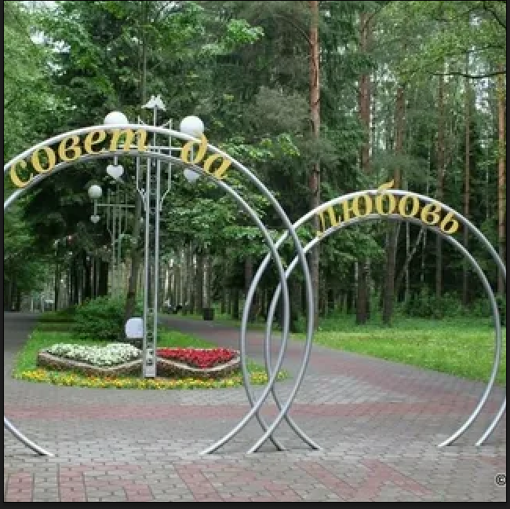
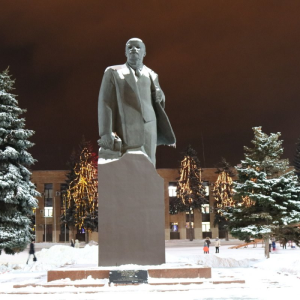
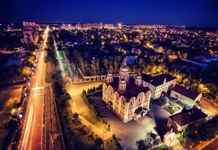

Достопримечательности
Не забудьте фотоаппарат

В парке пристутсвуют атракционы и уютная атмосфера
Парк культуры "Ёлочки"
Каширское шоссе 107
Гугл карты

Статуя В.И. Ленина
площадь 30-летия Победы
Московская область, Домодедово, площадь 30-летия Победы
Гугл карты

Мемориал солдатам домодедовцам
Обелиск славы
Московская область, Домодедово, микрорайон Северный
Гугл карты

История Города
Историки говорят, что 200 - 300 млн. лет назад, над домодедовской землей плескалось море. Сохранились даже его следы - залежи известняка, на глыбах которого заметны впечатанные останки морских животных. Эпоха ледника оставила после себя в районе глубокие речные долины, наносы песка и красной глины. Здесь когда-то бродили мамонты.
Первое упоминание Домодедово в письменах древности краеведы относят к 1401 году. В течение многих веков здесь пролегал старинный Каширский тракт, связывающий Москву с югом. Первой владелицей села Домодедово стала Елена Ольгердовна – жена серпуховско-боровского князя Владимира Андреевича. А в начале ХVIII века князю А. Меншикову, сподвижнику Петра I, были пожалованы Домодедовская и Мячковская волости.
Рядом исстари существовали другие населенные пункты. Поэтому вполне можно предположить и более древнюю историю домодедовских селений. Сохранились Воскресенская церковь в селе Битягово (1670 г.), усадьба позднего классицизма в Константиново на месте вотчины князей Ромодановских, принадлежавшая во второй половине XIX века известному путешественнику Н.М.Пржевальскому, усадьба Морозовых выдающегося русского архитектора Ф.О.Шехтеля. Охраняется государством Воскресенская церковь (1697 г.) в селе Колычеве. В 1781 году Екатерина II удостоила это село «имени, прав и преимуществ города» под названием Никитск. Он был провозглашен центром уезда, проживало тогда здесь 747 человек, заняты они были «частию в хлебопашестве, а более в ломке и приготовлении белого камня», из которого сооружались лучшие здания Москвы, Владимира и других городов Золотого кольца. С 1802 года Никитск исчез из списка русских городов, восстановилось название села Колычево, но герб древнего города стал основой нынешнего домодедовского герба.
Помнит домодедовская земля, как в 1812 году через село Ям двигались колонны генерала Д.С.Дохтурова и фельдмаршала М.И.Кутузова. По Каширской дороге проходили и французские войска, оставлявшие Москву.
Из промышленных производств выделялись тогда каменоломни, мукомольная мельница. В 1825 году помещиком Похвистневым была построена одна из первых бумагопрядильных фабрик в России – старейшее предприятие города. Затем были построены кирпичный и известковый заводы, к 1908 году работали еще две фабрики.
В связи с реконструкцией Москвы в Домодедово в 1937 году переехало около 200 семей москвичей. В 1938 году образовался рабочий поселок, число его жителей достигло 8,7 тысяч человек.
В 1941 году Домодедово, где проживало уже 14,5 тысячи жителей, переводится в категорию рабочего поселка.
Развитие поселка задержала Великая Отечественная война. В первые послевоенные годы промышленные предприятия Домодедово быстро восстанавливали свой производственный потенциал.
Вместе с промышленным развитием шло жилищное и бытовое строительство.
12 марта 1947 года рабочий поселок был преобразован в город районного подчинения, а в 1969 году образовался новый район, с центром в Домодедово. С 1 января 2006 года район преобразован в городской округ Домодедово.